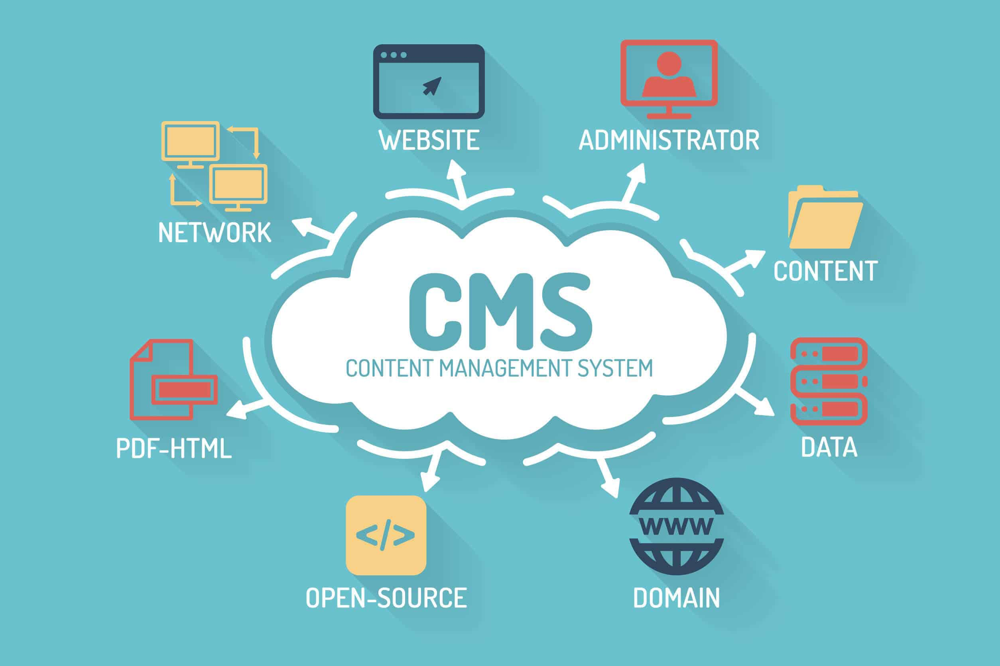

The Different Types of Content Management Systems (CMS)
What is Content Management Systems?

Content Management Systems (CMS) are software applications that allow users to create, manage, and publish digital content, such as text, images, audio, and video, on the web. CMS can be used for a variety of purposes, including blogging, e-commerce, enterprise content management, and more.
With a CMS, users can create and edit content without requiring advanced technical skills, such as HTML or programming knowledge. CMS typically provide a user-friendly interface for managing content, including tools for creating and formatting content, uploading and managing media, and organizing content into categories and pages.
CMS can also provide features such as user management, version control, and search functionality, which allow users to collaborate on content and easily find the information they need.
"One example of a content management system is WordPress, which is a free and open-source CMS that powers millions of websites worldwide. WordPress is known for its user-friendly interface and flexibility, allowing users to easily create and manage content, customize their site's design and functionality with themes and plugins, and add features such as e-commerce and social media integration."
"WordPress also has a large community of developers and users, who create and share resources such as tutorials, themes, and plugins to help users enhance their websites. It's used by everyone from bloggers and small businesses to large enterprises and major news organizations."
"Other popular examples of CMS include Drupal, Joomla, Shopify, and Squarespace, each with their own strengths and weaknesses and designed for different types of users and use cases."
The Different Types of Content Management Systems (CMS)
- Web Content Management Systems (WCMS): These are CMS designed specifically for managing web content. They provide tools for creating, editing, and publishing web pages, as well as managing site structure, navigation, and design. Examples include WordPress, Drupal, and Joomla.
- Document Management Systems (DMS): These CMS are designed for managing documents, such as contracts, invoices, and legal files. They provide features for version control, document security, and access control. Examples include SharePoint, Alfresco, and OpenText.
- Digital Asset Management Systems (DAM): These CMS are designed for managing digital assets such as images, videos, and audio files. They provide tools for organizing and searching assets, as well as managing rights and permissions. Examples include Adobe Experience Manager, Widen Collective, and Bynder.
- Learning Management Systems (LMS): These CMS are designed for managing and delivering e-learning content, such as online courses, quizzes, and assessments. They provide tools for creating and managing courses, tracking progress, and delivering content. Examples include Moodle, Blackboard, and Canvas.
- E-commerce Content Management Systems: These CMS are designed specifically for managing e-commerce websites. They provide tools for creating and managing product listings, orders, and payments, as well as marketing and analytics features. Examples include Shopify, Magento, and WooCommerce.
There are many other types of CMS, including social media management systems, marketing automation systems, and more, each designed to meet the unique needs of different users and use cases.
Content, media, and document publishing and management platforms are used to create, manage, and publish content on the web, including text, images, videos, and other multimedia formats. These platforms are often used by organizations as an intranet site and document management system for internal use, as well as for publishing web content such as a newspaper, blog, or corporate website.
Some examples of content, media, and document publishing and management platforms include:
- WordPress: A popular CMS platform that allows users to create and manage websites and blogs.
- Drupal: Another popular CMS platform that provides a range of tools and services for managing digital content.
- Joomla: A CMS platform that is used for creating and managing websites, blogs, and online applications.
- SharePoint: A platform that provides document management and collaboration tools for businesses and organizations.
- Adobe Experience Manager: A platform that enables businesses to create, manage, and deliver digital experiences across multiple channels.
- Wix: A platform that provides tools for creating and publishing websites and online stores.
These platforms offer a range of features and services for creating and managing digital content, including content creation tools, content management systems, publishing tools, and more. They are essential for businesses and organizations that need to manage large amounts of digital content and publish it online.
About
- If you want to learn more, you can search for it in your browser.
- The content of this site is not mine to take credit. I only get information on the internet.
- Click to Watch my Video